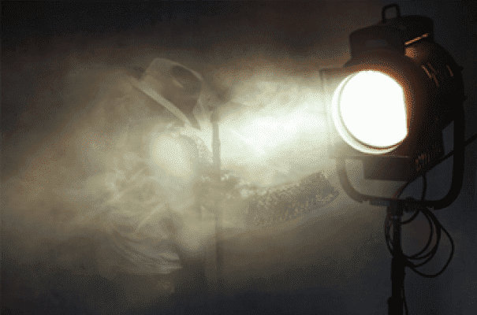
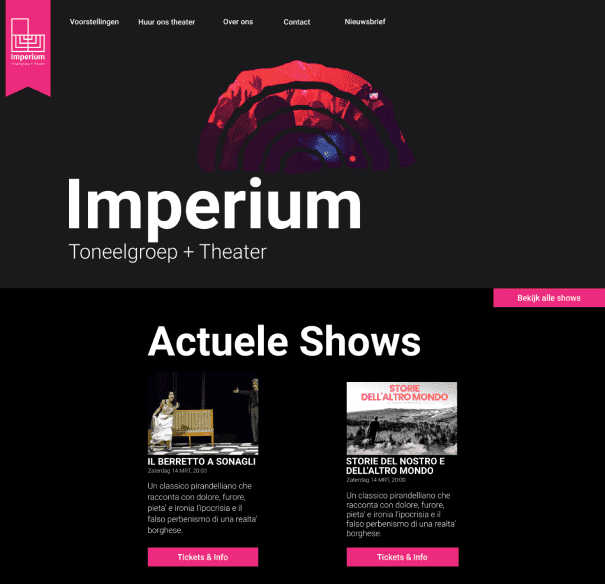

Deliverables
Het doel was om een herontwerp voor het Imperium Theater te maken. Daarbij zouden er schetsen, wireframes, een styleguide en hi-fi ontwerpen worden gemaakt. Dat was dan ook wat uiteindelijk had opgeleverd aan het einde van het eerste blok. Daarbij heb ik ook een verslag gemaakt waarin staat wat ik had geleerd uit de YouTube video’s en Linkedin Learning cursussen.
Ik heb elke week bijgehouden wat mijn progressie was omtrent het maken van de website. Om mijn progressie te kunnen zien kan er gekeken worden naar mijn persoonlijke blog.
Visualisaties
Het doel was om een herontwerp voor het Imperium Theater te maken. Daarbij zouden er schetsen, wireframes, een styleguide en hi-fi ontwerpen worden gemaakt. Dat was dan ook wat uiteindelijk had opgeleverd aan het einde van het eerste blok. Daarbij heb ik ook een verslag gemaakt waarin staat wat ik had geleerd uit de YouTube video’s en Linkedin Learning cursussen.
Ik heb elke week bijgehouden wat mijn progressie was omtrent het maken van de website. Om mijn progressie te kunnen zien kan er gekeken worden naar mijn persoonlijke blog.
- 

Voordat ik begon met het maken van de website had ik een verschillende tutorials over double exposure gevolgd. Dit was een trend die ik wou gebruiken op de website en het was een goede oefening op grafisch gebied.
Ik heb geleerd wat het belang is van schetsen. Hiervoor maakte ik namelijk niet vaak gebruik van schetsen en ging ik gelijk ontwerpen in wireframes. Snel ideeën uitschetsen kan een goed beeld geven wat je wilt hebben op de website. Het laat je goed nadenken over de mogelijkheden van het ontwerp.
Ik had veel tips gevonden voor het gebruik van een wireframe. Een wireframe is belangrijk om een goede opbouw en skelet voor de website te hebben, voordat je gaat werken met de rest van de opmaak. Voorheen begon ik gelijk met kleuren te ontwerpen, waardoor ik met te veel dingen bezig was naast de layout. Een goed skelet is namelijk het belangrijkste onderdeel van het ontwerp. Het heeft mij een goed beeld gegeven over hoe ik het ontwerp wou hebben.
Na de wireframes had ik een styleguide gemaakt, wat ik meestal ik oversla. Dit omdat ik de stijl meestal uit mijn hoofd weet en het niet hoef te delen. Echter heb ik gemerkt dat de styleguide mij een goede richting en houvast heeft gegeven voor het ontwerp. Daarom ga ik de styleguide in de toekomst zeker meer gebruiken.
-

-

Aan de hand van de wireframes en de styleguide kon ik het ontwerp op een goede, snelle en consistente manier maken. Ik ben erg blij met het uiteindelijke resultaat. Als ik mijn ontwerpvaardigheden vergelijk met de eerste klas, dan ben ik zeker vooruitgegaan en daarom was dit blok voor mij dan ook een succes.
Voor alle mockups kan er gekeken worden op Figma zelf. Dat kan via de volgende link, die een preview geeft van alle Mockups.